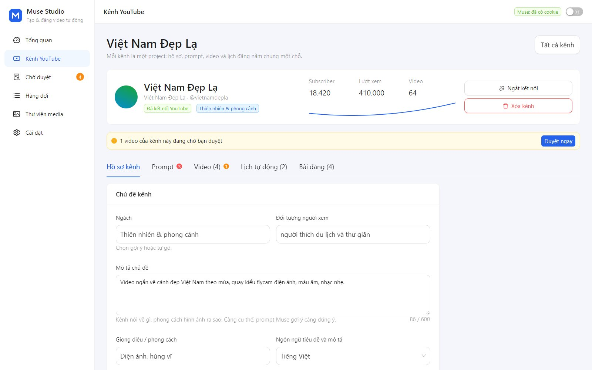
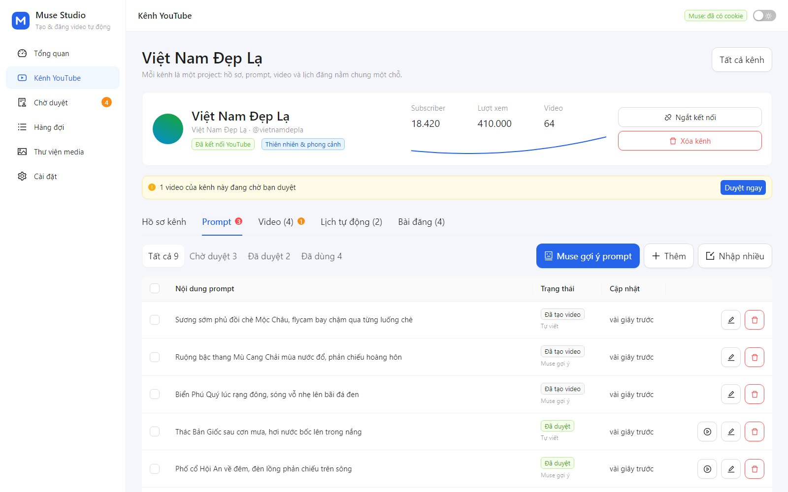
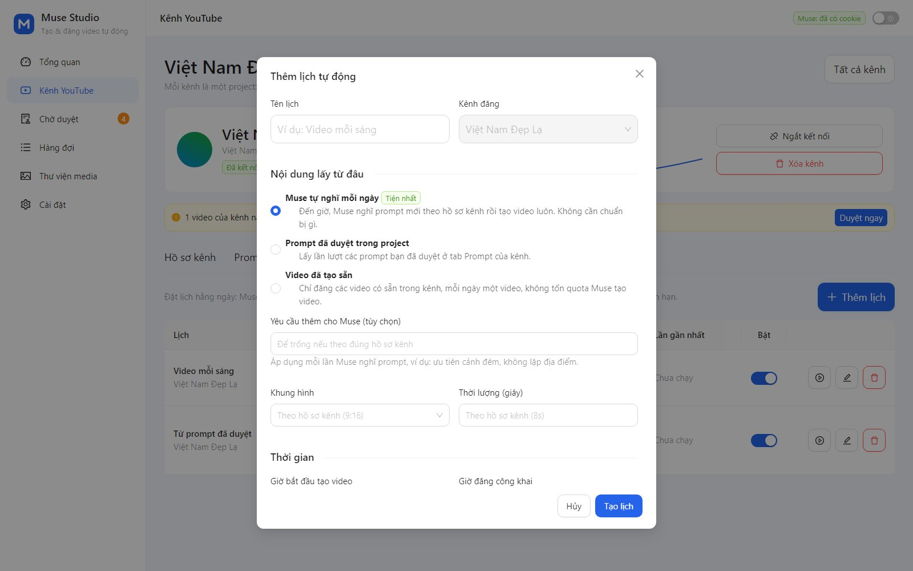

Dạy Muse hiểu kênh của bạn
Điền chủ đề một lần, mọi video sau đó đi đúng hướng.
- Ngách, chủ đề, đối tượng người xem, giọng điệu
- Điều cần tránh trong nội dung
- Khung hình và thời lượng mặc định (ví dụ Shorts 9:16)
Muse Studio giúp bạn tạo video YouTube từ chủ đề của từng kênh bằng AI, rồi tự động đăng theo lịch.
Tiết kiệm thời gian, tối ưu quy trình, tập trung vào sáng tạo nội dung.

Từ nghĩ ý tưởng, tạo video, duyệt đến đăng và theo dõi số liệu.
Khai báo ngách, chủ đề, giọng điệu, khung hình một lần. Mọi prompt và tiêu đề sau đó đều bám đúng chất kênh.
Gợi ý hàng loạt prompt mới theo hồ sơ kênh, không lặp ý đã có. Bạn sửa, duyệt rồi mới tạo video.
Muse tự nghĩ prompt mỗi ngày, hoặc lấy prompt đã duyệt, hoặc đăng lại video bạn đã tạo sẵn.
Video tạo xong vào hộp Chờ duyệt, đã điền sẵn tiêu đề, mô tả, tag. Bạn xem lại rồi mới đẩy lên YouTube.
Kết nối nhiều kênh YouTube, theo dõi lượt xem, subscriber và số liệu từng video trên một bảng điều khiển.
Không cần server hay đăng ký thêm dịch vụ. Chạy nền, tự khởi động cùng máy nếu bạn muốn.
Điền chủ đề một lần, mọi video sau đó đi đúng hướng.


Prompt do Muse sinh luôn ở trạng thái chờ duyệt: không có gì được tạo khi bạn chưa đồng ý.
Chọn nguồn nội dung phù hợp với cách làm của bạn.


Một hộp thư duy nhất cho mọi prompt và video đang chờ bạn.
Kết nối kênh YouTube, điền ngách và chủ đề.
Bạn xem, sửa và duyệt những ý tưởng ưng ý.
Muse tạo video theo prompt đã duyệt, lần lượt từng video.
Xem lại, hẹn giờ, đăng lên YouTube. Hoặc để lịch lo mỗi ngày.
Làm theo từng bước. Cần máy Windows, Mac hoặc Linux có Chrome hoặc Edge.
Mở cmd, gõ node -v. Nếu chưa có hoặc nhỏ hơn v22, tải bản LTS tại nodejs.org rồi cài (bấm Next đến hết).
node -v
Bấm nút Tải về bên cạnh, rồi chuột phải file zip → Extract All vào một thư mục cố định, ví dụ C:\MuseStudio.
Bấm đúp Start.bat. Tool chạy nền, vài giây sau trình duyệt tự mở. Muốn tắt, bấm đúp Stop.bat. Không dùng Windows? Mở terminal trong thư mục rồi gõ:
node server.js
Vào Cài đặt, dán cookie đăng nhập muse.ai (xuất bằng extension Cookie-Editor, có hướng dẫn ngay trong giao diện), bấm Kiểm tra kết nối.
Vào Kênh YouTube, làm theo hướng dẫn 5 bước tạo Google OAuth (làm một lần), rồi Thêm kênh. Sau đó điền chủ đề kênh và đặt lịch.
Có. Muse Studio dùng chính tài khoản Muse của bạn để tạo video, bằng cookie đăng nhập bạn tự dán vào Cài đặt. Chi phí và hạn mức tạo video theo gói Muse của bạn.
Không. Mọi thứ, gồm cookie Muse, token YouTube và video, lưu trong thư mục data trên máy bạn. Tool chỉ liên lạc với Muse và YouTube, và chỉ nhận kết nối từ chính máy này.
Mỗi project Google có 10.000 đơn vị API mỗi ngày, mỗi lần đăng tốn 1.600, tức khoảng 6 video mỗi ngày cho toàn bộ các kênh. Trang Kênh luôn hiện mức đã dùng.
Có. Tool chạy trên máy của bạn nên lịch chỉ chạy khi máy đang bật. Nếu máy tắt đúng giờ chạy, lịch tự chạy bù khi bạn bật lại trong cùng ngày. Bạn có thể cho tool tự chạy khi mở máy.
Mặc định mọi video đều chờ bạn duyệt. Với lịch, bạn có thể chọn "Tự đăng, không cần duyệt" nếu tin tưởng nội dung.
Tool điều khiển trình duyệt để làm việc với Muse nên có thể cần cập nhật khi Muse thay đổi. Hãy liên hệ để nhận bản cập nhật.
Được, chạy bằng lệnh node server.js. Hai file Start.bat và Stop.bat chỉ dành cho Windows.